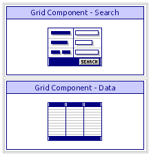
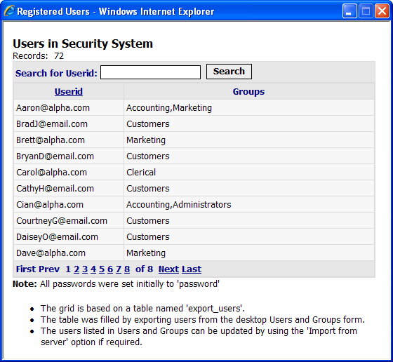

LOGINLIST.A5W
Purpose
The LOGINLIST.A5W page shows a list of users initially configured in the security system..
Description
The LOGINLIST.A5W page contains the GRD_LOGINDATAGRD_INTUSERLIST Grid Component grid component, which shows a list of all users initialy listed in the security system.
Links
The Show List of Users link on the LOGIN.A5W page opens the LOGINLIST.A5W page in a popup window.

LOGINLIST.A5W in the WYSIWYG tab of the HTML Editor

LOGINLIST.A5W in the Browser
Edits to the Page Source
The page was built by opening the GRD_LOGINDATAGRD_INTUSERLIST Grid Component grid component in the grid builder and selecting "Save Page" from the toolbar. The page was then edited to Romove Non-essential Code. The only sections left on the page were Body.Search_HTML and Body.GRID_HTML, although the search section could also be removed as it isn't used.
Page Security Information
Always Allowed
See Also